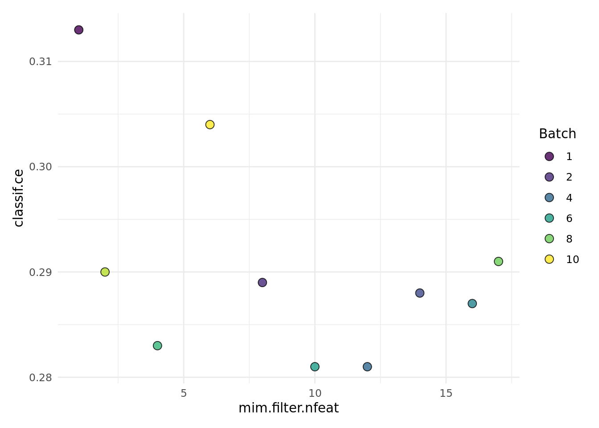
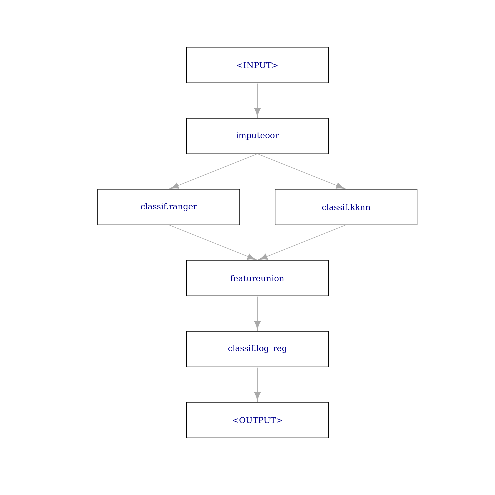
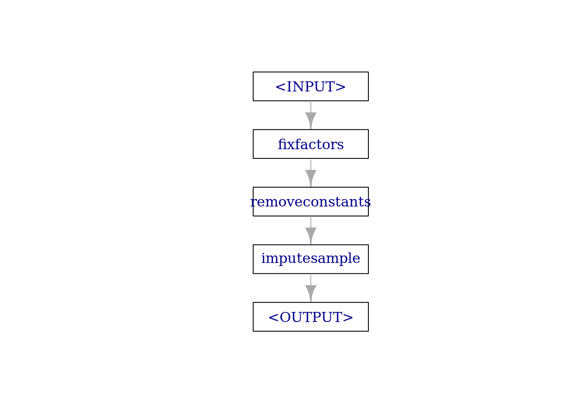

library("mlr3verse")
library("data.table")
library("ggplot2")Outline
This is the third part of a serial of use cases with the German credit dataset. The other parts of this series can be found here:
In this tutorial, we continue working with the German credit dataset. We already used different Learners on it and tried to optimize their hyperparameters. Now we will do four additional things:
- We preprocess the data as an integrated step of the model fitting process
- We tune the associated preprocessing parameters
- We stack multiple
Learners in an ensemble model - We discuss some techniques that make
Learners able to tackle challenging datasets that they could not handle otherwise (we are going to outline what challenging means in particular later on)
Prerequisites
First, load the packages we are going to use:
We initialize the random number generator with a fixed seed for reproducibility, and decrease the verbosity of the logger to keep the output clearly represented.
set.seed(7832)
lgr::get_logger("mlr3")$set_threshold("warn")
lgr::get_logger("bbotk")$set_threshold("warn")We again use the German credit dataset, but will restrict ourselves to the factorial features. To make things interesting or to make it a bit harder for our Learners, we introduce missing values in the dataset:
task = tsk("german_credit")
credit_full = task$data()
credit = credit_full[, sapply(credit_full, FUN = is.factor), with = FALSE]
# sample values to NA
credit = credit[, lapply(.SD, function(x) {
x[sample(c(TRUE, NA), length(x), replace = TRUE, prob = c(.9, .1))]
})]
credit$credit_risk = credit_full$credit_risk
task = TaskClassif$new("GermanCredit", credit, "credit_risk")We instantiate a Resampling instance for this Task to be able to compare resampling performance:
cv10 = rsmp("cv")$instantiate(task)We also might want to use multiple cores to reduce long run times of tuning runs.
future::plan("multiprocess")Intro
In this use case, we will take a look at composite machine learning algorithms that may incorporate data preprocessing or the combination of multiple Learners (“ensemble methods”).
We use the mlr3pipelines package that enables us to chain PipeOps into data flow Graphs.
Available PipeOps are listed in the mlr_pipeops dictionary:
mlr_pipeops<DictionaryPipeOp> with 64 stored values
Keys: boxcox, branch, chunk, classbalancing, classifavg, classweights, colapply, collapsefactors, colroles,
copy, datefeatures, encode, encodeimpact, encodelmer, featureunion, filter, fixfactors, histbin, ica,
imputeconstant, imputehist, imputelearner, imputemean, imputemedian, imputemode, imputeoor, imputesample,
kernelpca, learner, learner_cv, missind, modelmatrix, multiplicityexply, multiplicityimply, mutate, nmf,
nop, ovrsplit, ovrunite, pca, proxy, quantilebin, randomprojection, randomresponse, regravg,
removeconstants, renamecolumns, replicate, scale, scalemaxabs, scalerange, select, smote, spatialsign,
subsample, targetinvert, targetmutate, targettrafoscalerange, textvectorizer, threshold, tunethreshold,
unbranch, vtreat, yeojohnsonMissing Value Imputation
We have just introduced missing values into our data. While some Learners can deal with missing value, many cannot. Trying to train a random forest fails because of this:
ranger = lrn("classif.ranger")
ranger$train(task)Error: Task 'GermanCredit' has missing values in column(s) 'credit_history', 'employment_duration', 'foreign_worker', 'housing', 'installment_rate', 'job', 'number_credits', 'other_debtors', 'other_installment_plans', 'people_liable', 'personal_status_sex', 'present_residence', 'property', 'purpose', 'savings', 'status', 'telephone', but learner 'classif.ranger' does not support thisWe can perform imputation of missing values using a PipeOp. To find out which imputation PipeOps are available, we do the following:
mlr_pipeops$keys("^impute")[1] "imputeconstant" "imputehist" "imputelearner" "imputemean" "imputemedian" "imputemode"
[7] "imputeoor" "imputesample" We choose to impute factorial features using a new level (via PipeOpImputeOOR). Let’s use the PipeOp itself to create an imputed Task. This shows us how the PipeOp actually works:
imputer = po("imputeoor")
task_imputed = imputer$train(list(task))[[1]]
task_imputed$missings()
head(task_imputed$data())We do not only need complete data during training but also during prediction. Using the same imputation heuristic for both is the most consistent strategy. This way the imputation strategy can, in fact, be seen as a part of the complete learner (which could be tuned).
If we used the imputed Task for Resampling, we would leak information from the test set into the training set. Therefore, it is mandatory to attach the imputation operator to the Learner itself, creating a GraphLearner:
graph_learner_ranger = as_learner(po("imputeoor") %>>% ranger)
graph_learner_ranger$train(task)This GraphLearner can be used for resampling – like an ordinary Learner:
rr = resample(task, learner = graph_learner_ranger, resampling = cv10)
rr$aggregate()classif.ce
0.287 Feature Filtering
Typically, sparse models, i.e. having models with few(er) features, are desirable. This is due to a variety of reasons, e.g., enhanced interpretability or decreased costs of acquiring data. Furthermore, sparse models may actually be associated with increased performance (especially if overfitting is anticipated). We can use feature filter to only keep features with the highest information. Filters are implemented in the mlr3filters package and listed in the following dictionary:
mlr_filters<DictionaryFilter> with 21 stored values
Keys: anova, auc, carscore, carsurvscore, cmim, correlation, disr, find_correlation, importance,
information_gain, jmi, jmim, kruskal_test, mim, mrmr, njmim, performance, permutation, relief,
selected_features, varianceWe apply the FilterMIM (mutual information maximization) Filter as implemented in the praznik package. This Filter allows for the selection of the top-k features of best mutual information.
filter = flt("mim")
filter$calculate(task_imputed)$scores status credit_history savings purpose property
1.0000 0.9375 0.8750 0.8125 0.7500
housing employment_duration other_installment_plans personal_status_sex other_debtors
0.6875 0.6250 0.5625 0.5000 0.4375
installment_rate foreign_worker job number_credits telephone
0.3750 0.3125 0.2500 0.1875 0.1250
present_residence people_liable
0.0625 0.0000 Making use of this Filter, you may wonder at which costs the reduction of the feature space comes. We can investigate the trade-off between features and performance by tuning. We incorporate our filtering strategy into the pipeline using PipeOpFilter. Like before, we need to perform imputation as the Filter also relies on complete data:
fpipe = po("imputeoor") %>>% po("filter", flt("mim"), filter.nfeat = 3)
fpipe$train(task)[[1]]$head() credit_risk credit_history savings
1: good all credits at this bank paid back duly ... >= 1000 DM
2: bad no credits taken/all credits paid back duly unknown/no savings account
3: good all credits at this bank paid back duly unknown/no savings account
4: good no credits taken/all credits paid back duly unknown/no savings account
5: bad existing credits paid back duly till now unknown/no savings account
6: good .MISSING ... >= 1000 DM
status
1: no checking account
2: ... < 0 DM
3: ... >= 200 DM / salary for at least 1 year
4: no checking account
5: no checking account
6: ... >= 200 DM / salary for at least 1 yearWe can now tune over the mim.filter.nfeat parameter. It steers how many features are kept by the Filter and eventually used by the learner:
search_space = ps(
mim.filter.nfeat = p_int(lower = 1, upper = length(task$feature_names))
)The problem is one-dimensional (i.e. only one parameter is tuned). Thus, we make use of a grid search. For higher dimensions, strategies like random search are more appropriate. The tuning procedure may take some time:
instance = tune(
tuner = tnr("grid_search"),
task,
learner = fpipe %>>% lrn("classif.ranger"),
resampling = cv10,
measure = msr("classif.ce"),
search_space = search_space)We can plot the performance against the number of features. If we do so, we see the possible trade-off between sparsity and predictive performance:
autoplot(instance, type = "marginal")
Stacking
We want to build a model that is based on the predictions of other Learners. This means that we are in the state that we need predictions already during training. This is a very specific case that is luckily handled by PipeOpLearnerCV. PipeOpLearnerCV performs cross-validation during the training phase and returns the cross-validated predictions. We use "prob" predictions because they carry more information than response prediction:
graph_stack = po("imputeoor") %>>%
gunion(list(
po("learner_cv", lrn("classif.ranger", predict_type = "prob")),
po("learner_cv", lrn("classif.kknn", predict_type = "prob")))) %>>%
po("featureunion") %>>% lrn("classif.log_reg")We built a pretty complex Graph already. Therefore, we plot it:
graph_stack$plot(html = FALSE)
We now compare the performance of the stacked learner to the performance of the individual Learners:
grid = benchmark_grid(
task = task,
learner = list(
graph_stack,
as_learner(po("imputeoor") %>>% lrn("classif.ranger")),
as_learner(po("imputeoor") %>>% lrn("classif.kknn")),
as_learner(po("imputeoor") %>>% lrn("classif.log_reg"))),
resampling = cv10)
bmr = benchmark(grid) learner_id classif.ce
1: imputeoor.classif.ranger.classif.kknn.featureunion.classif.log_reg 0.282
2: imputeoor.classif.ranger 0.292
3: imputeoor.classif.kknn 0.299
4: imputeoor.classif.log_reg 0.283If we train the stacked learner and look into the final Learner (the logistic regression), we can see how “important” each Learner of the stacked learner is:
graph_stack$train(task)$classif.log_reg.output
NULLsummary(graph_stack$pipeops$classif.log_reg$state$model)
Call:
stats::glm(formula = task$formula(), family = "binomial", data = data,
model = FALSE)
Coefficients: (2 not defined because of singularities)
Estimate Std. Error z value Pr(>|z|)
(Intercept) -3.3179 0.3527 -9.406 < 2e-16 ***
classif.ranger.prob.good 5.4010 0.5648 9.563 < 2e-16 ***
classif.ranger.prob.bad NA NA NA NA
classif.kknn.prob.good 0.8502 0.3169 2.683 0.00729 **
classif.kknn.prob.bad NA NA NA NA
---
Signif. codes: 0 '***' 0.001 '**' 0.01 '*' 0.05 '.' 0.1 ' ' 1
(Dispersion parameter for binomial family taken to be 1)
Null deviance: 1221.7 on 999 degrees of freedom
Residual deviance: 1054.1 on 997 degrees of freedom
AIC: 1060.1
Number of Fisher Scoring iterations: 4The random forest has a higher contribution.
Robustify: Preventing new Prediction Factor Levels and other Problems
We now shift the context, using the complete German credit dataset:
task = tsk("german_credit")There is a potential practical problem for both, small data sets and data sets with covariates having many factor levels: It may occur that not all possible factor levels have been used by the Learner during training. This happens because these rare instances are simply not sampled. The prediction then may fail because the Learner does not know how to handle unseen factor levels:
task_unseen = task$clone()$filter(1:30)
learner_logreg = lrn("classif.log_reg")
learner_logreg$train(task_unseen)
learner_logreg$predict(task)Error in model.frame.default(Terms, newdata, na.action = na.action, xlev = object$xlevels): factor job has new levels unemployed/unskilled - non-residentNot only logistic regression but also many other Learners cannot handle new levels during prediction. Thus, we use PipeOpFixFactors to prevent that. PipeOpFixFactors introduces NA values for unseen levels. This means that we may need to impute afterwards. To solve this issue we can use PipeOpImputeSample, but with affect_columns set to only factorial features.
Another observation is that all-constant features may also be a problem:
task_constant = task$clone()$filter(1:2)
learner_logreg = lrn("classif.log_reg")
learner_logreg$train(task_constant)Error in `contrasts<-`(`*tmp*`, value = contr.funs[1 + isOF[nn]]): contrasts can be applied only to factors with 2 or more levelsThis can be fixed using PipeOpRemoveConstants.
Both, handling unseen levels and all-constant features can be handled simultaneously using the following Graph:
robustify = po("fixfactors") %>>%
po("removeconstants") %>>%
po("imputesample", affect_columns = selector_type(c("ordered", "factor")))
robustify$plot(html = FALSE)
This robust learner works even in very pathological conditions:
graph_learner_robustify = as_learner(robustify %>>% learner_logreg)
graph_learner_robustify$train(task_constant)
graph_learner_robustify$predict(task)<PredictionClassif> for 1000 observations:
row_ids truth response
1 good good
2 bad bad
3 good good
---
998 good bad
999 bad bad
1000 good badYour Ideas
There are various possibilities for preprocessing with PipeOps. You can try different methods for preprocessing and training. Feel free to discover this variety by yourself! Here are only a few hints that help when working with PipeOps:
- It is not allowed to have two
PipeOps with the sameIDin aGraph- Initialize a
PipeOpwithpo("...", id = "xyz")to change its ID on construction
- Initialize a
- If you build large
Graphs involving complicated optimizations, like many"learner_cv", they may need a long time to train - Use the
affect_columnsparameter if you want aPipeOpto only operate on part of the data - Use
po("select")if you want to remove certain columns (possibly only along a single branch of multiple parallel branches). Both takeselector_xxx()arguments, e.g.selector_type("integer") - You may get the best performance if you actually inspect the features and see what kind of transformations work best for them (know your data!)
- See what
PipeOps are available by inspectingmlr_pipeops$keys(), and get help about them using?mlr_pipeops_xxx